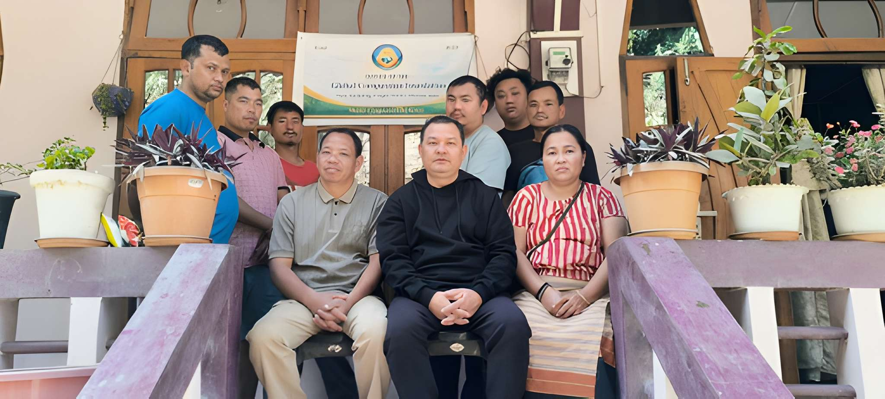
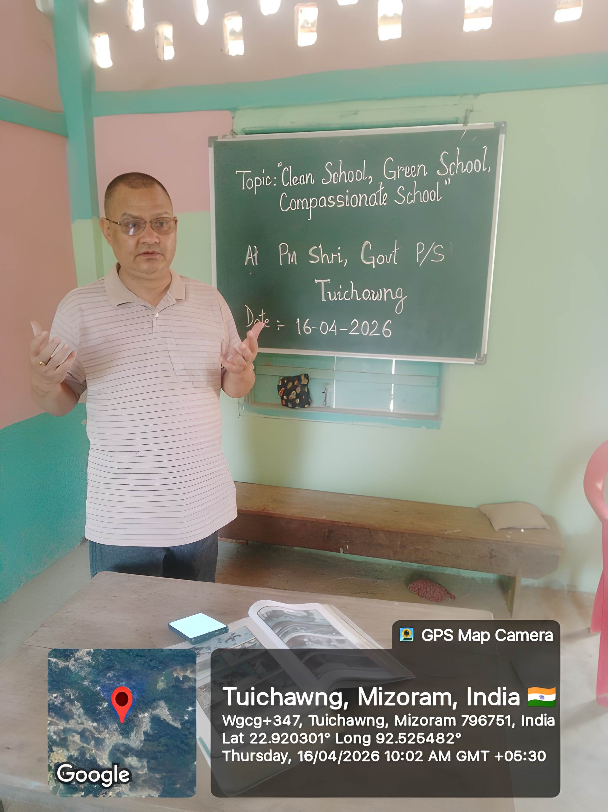

1
Name of the Society
The name of the Society shall be GLOBAL COMPASSION FOUNDATION.
A non-profit, non-religious, and humanitarian organization serving underprivileged communities in Mizoram, India.
Global Compassion Foundation is a non-profit, non-religious, and humanitarian organization established in 2025 at Tuichawng Village, Lunglei District, Mizoram, India. The Foundation was formed with the sole purpose of serving underprivileged and marginalized communities through education, healthcare, social welfare, and compassionate community development.
We believe that compassion, when put into action, has the power to transform lives. Our work is guided by universal human values such as kindness, dignity, equality, ethical conduct, and social responsibility, without discrimination on the basis of religion, caste, community, language, gender, or background.

Our guiding principles and direct actions for community transformation.
The values that drive every decision, program, and volunteer action in our foundation.
Devoting our energy to directly touch lives and uplift those facing absolute adversity.
Maintaining 100% direct expenditure transparency, ensuring every rupee goes directly to the field.
Welcoming and serving children and families regardless of ethnic heritage, community, or beliefs.
Operating with strict honesty, respect, and deep respect for local customs and village councils.
Delivering healthcare and tutoring purely based on human need, with absolute neutrality.

Global Compassion Foundation was founded by Mr. Sudip Chakma, a Government Primary School Teacher from Tuichawng Village and the founder of Mahabodhi Residential School, Tuichawng.
With years of experience in grassroots education and community service, he is a dedicated and selfless social worker who deeply understands the challenges faced by children and families in rural and marginalized areas.
His lifelong commitment to education, social upliftment, and compassionate service inspired the formation of this Foundation to serve society in a structured, transparent, and sustainable manner.
Through focus, dedication, and resourcefulness, we run key programs that make a difference in remote tracts.
Education is at the heart of our work. Global Compassion Foundation aims to establish and support charitable schools, hostels, and learning centers for children who lack access to quality education due to poverty and geographical challenges. Our focus is on ensuring that education truly reaches the child, especially in rural and marginalized communities.
Many rural and remote areas suffer from inadequate healthcare facilities, long distances to hospitals, shortage of medical professionals, and lack of health awareness. The Foundation works towards establishing rural hospitals, primary health centers, clinics, and mobile medical services to provide affordable and accessible healthcare for all.
We aim to establish and support old age homes, shelter homes, and care centers for the elderly, destitute, abandoned, and other vulnerable individuals, ensuring they live with dignity and care.
The Foundation promotes mental peace and emotional well-being through meditation and mindfulness centers. Meditation, as practiced by the Foundation, is completely non-religious and open to all. It is offered solely as a method to improve concentration, inner peace, emotional balance, and a healthy way of life.
We undertake relief and rehabilitation work during natural disasters and emergencies, support livelihood development, promote environmental awareness, sanitation, nutrition, and community empowerment programs.
How personal inspiration translates to community empowerment and direct, on-the-ground actions.
Living within this context of educational exclusion, economic hardship, infrastructural deficits, and social marginalization, Mr. Sudip Chakma was deeply moved to take action:
Global Compassion Foundation’s core mission — especially the establishment of a non-profit school for underprivileged Chakma children — is rooted in addressing these lived realities:
Understanding the community's history, heritage, and the systematic gaps we work to bridge.
The Chakma are an ethnic tribal community of Buddhist heritage with a distinct culture, language, and history. They are one of the indigenous tribal groups in the Indian subcontinent, traditionally inhabiting the Chittagong Hill Tracts of Bangladesh and parts of Northeast India, including Mizoram, Tripura, Arunachal Pradesh, and Assam.
In Mizoram, Chakmas form a recognized Scheduled Tribe and make up around 8–9% of the state’s population. They are most heavily concentrated in the south of the state, along the border with Bangladesh.
Despite constitutional protections, the Chakma community in Mizoram continues to experience wide gaps in educational access and outcomes:
These educational barriers contribute to a persistent cycle of poverty and underdevelopment, restricting opportunities for advancement and skilled employment.
Most Chakma families in Mizoram rely on traditional subsistence agriculture such as shifting cultivation (jhum), which yields low productivity and limited economic stability.
The absence of infrastructure such as reliable irrigation, roads, electricity, and market access further limits economic opportunities and contributes to high levels of poverty.
Many Chakma-dominated areas in Mizoram suffer from chronic underdevelopment:
Such conditions reduce quality of life and compound barriers to health, education, and livelihood development.
Although the community is recognized under the Sixth Schedule of the Constitution and has its own Chakma Autonomous District Council (CADC), challenges persist:
Such discrimination intensifies feelings of marginalisation and restricts equitable participation in state-level opportunities.
With limited local healthcare infrastructure, many Chakma communities must travel long distances for medical care. Maternal and child health services are often inadequate, and emergency response is slow due to remoteness and poor connectivity.
Registered under the Mizoram Societies Registration Act, 2005 — the foundational legal charter of Global Compassion Foundation.
The name of the Society shall be GLOBAL COMPASSION FOUNDATION.
The Registered Office of the Society shall be situated in the State of Mizoram, and at present shall be located at the following address:
The aims and objects for which the Society is established are as follows:
To promote compassion, humanitarian values, ethical conduct, peace, harmony, and social responsibility among individuals and communities.
To establish, run, support, and manage schools, educational institutions, learning centers, and vocational training facilities for underprivileged and marginalized children, with special focus on providing access to quality education in rural, remote, and backward areas.
To establish and operate charitable homes, shelter homes, and care centers for the elderly, destitute, abandoned, and other vulnerable persons.
To provide affordable and accessible healthcare services, including preventive care, basic treatment, maternal and child health services, emergency care, and health awareness programs, particularly for poor and marginalized communities.
To address healthcare challenges in rural and underdeveloped regions, such as lack of medical infrastructure, shortage of healthcare professionals, poverty, long distances to hospitals, and low health awareness, by implementing community-based and inclusive healthcare solutions.
To undertake welfare and development programs for children, women, elderly persons, persons with disabilities, and other vulnerable and marginalized groups.
To provide relief, rehabilitation, and humanitarian assistance during natural disasters, emergencies, and other situations of distress.
To promote public health, sanitation, nutrition, environmental protection, climate awareness, and sustainable development through awareness programs and community-based initiatives.
To undertake livelihood development, skill training, self-help initiatives, and poverty alleviation programs for socio-economic empowerment of disadvantaged communities.
To collaborate and coordinate with Government departments, local authorities, non-governmental organizations, educational institutions, healthcare institutions, and donors for achieving the objectives of the Society.
To establish, maintain, and manage prayer centres and spaces for mental well-being, concentration, stress management, emotional balance, and peaceful living, open to all persons without distinction of religion, caste, creed, or belief, with the clear understanding that meditation is a non-religious, non-sectarian practice aimed solely at improving focus of mind, inner calm, ethical awareness, and overall quality of life.
Important Clause: All the incomes, earnings, movable or immovable properties of the Society shall be solely utilized and applied towards the promotion of its aims and objects only as set forth in this Memorandum of Association. No portion thereof shall be paid or transferred directly by way of dividends, bonus, profits, or in any manner whatsoever, to the present or past members of the Society. No member of the Society shall have any personal claim on any movable or immovable properties of the Society or make any profit, whatsoever, by virtue of his membership.
The names, addresses, occupations, and designations of the members of the Governing Body, as required under Section 5 of the Mizoram Societies Registration Act, 2005.
We, the undersigned, are desirous of forming a Society namely Global Compassion Foundation, under the Mizoram Societies Registration Act, 2005, in pursuance of this Memorandum of Association of the Society.
Authorised Signatories
President
Sudip Chakma
General Secretary
Rakesh Kumar Chakma